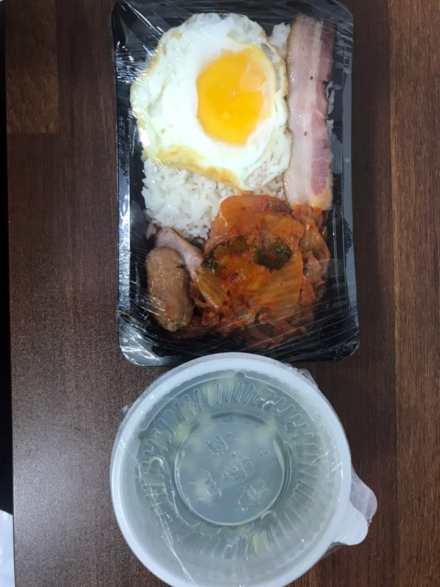
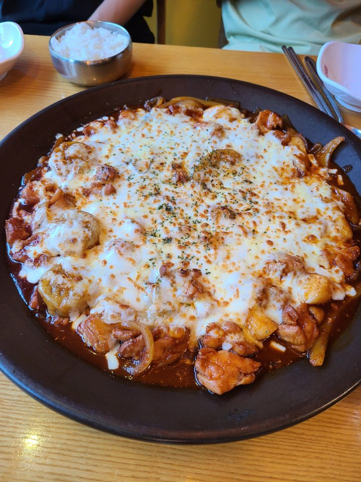
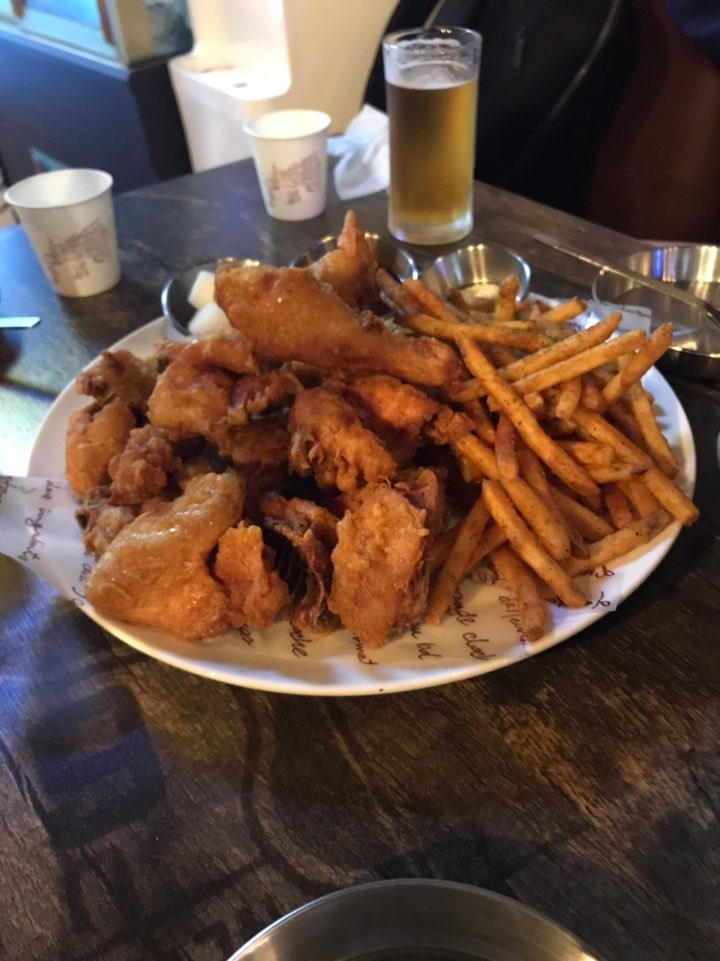

Home
좋아하는 안암 음식점
기본 정보
학교 및 학과 정보
좋아하는 안암 음식점
취미
1. 아바이 순대국

월~토 06:00 부터 09:00까지 진행하는 1000원짜리 아침정식.
2.내가 찜한 닭

프렌차이즈로 꽤 알려져있는 찜닭집. 치즈 올려먹는게 국룰임.
3.영철 버거

저녁까지는 햄버거를 팔고 밤에는 술집이 되는 영철버거. 후라이드 치킨이 상당히 맛있다.